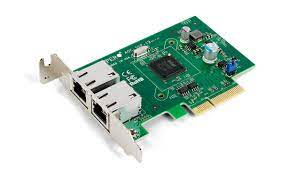

La tarjeta de red, también conocida como placa de red, adaptador de red, adaptador LAN, Interfaz de red física,
o sus términos en inglés network interface card o network interface controller (NIC), cuya traducción literal
del inglés es «tarjeta de interfaz de red» (TIR), es un componente de hardware que conecta un ordenador a una
red informática y que posibilita compartir recursos (como archivos, discos duros enteros, impresoras, e internet)
entre dos o más computadoras, es decir, en una red de computadoras.